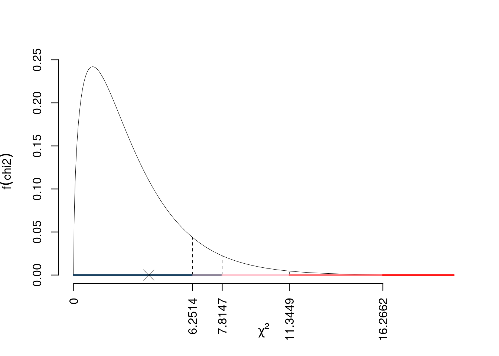
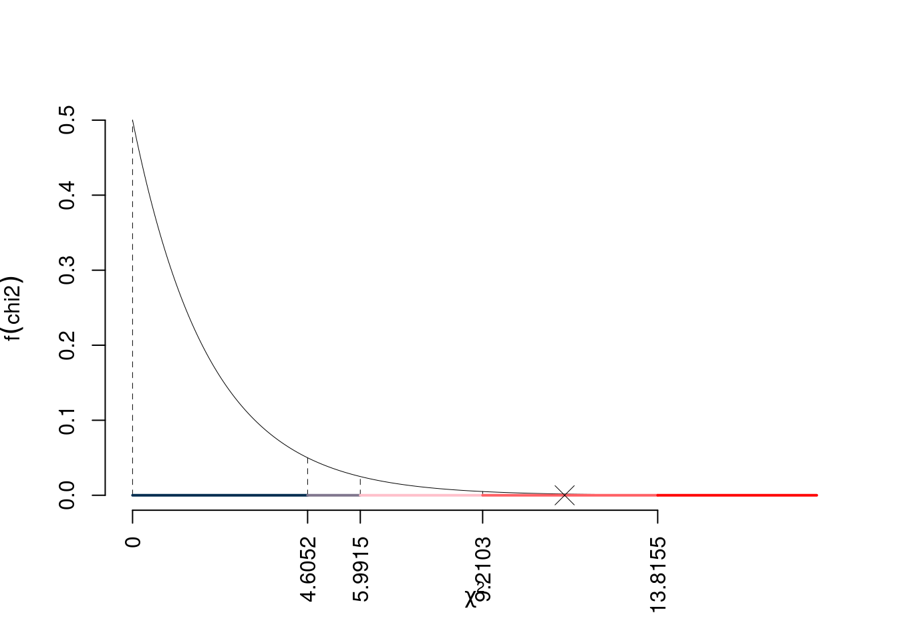
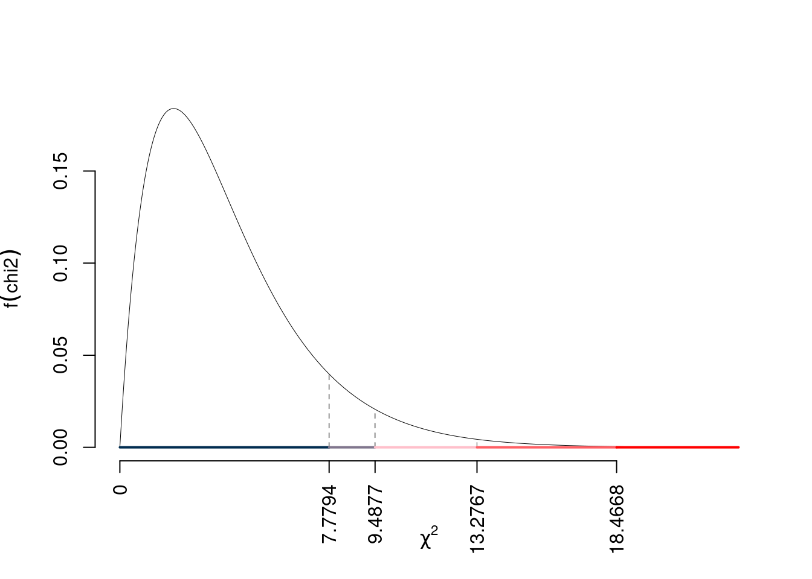

Test del Chi-quadro per indipendenza
Esercizio 1
In uno studio sulle preferenze di gusti di gelato è stato chiesto ad un campione di 200 persone, divise tra 100 uomini e 100 donne, di esprimere la propria preferenza tra quattro gusti di gelato (Cioccolato, Fragola, Vaniglia e Limone).
Qui di seguito è riportata la tavola di contingenza:
| Cioccolato | Fragola | Vaniglia | Limone | Tot | |
|---|---|---|---|---|---|
| Uomo | 25 | 15 | 30 | 40 | 110 |
| Donna | 20 | 10 | 40 | 30 | 100 |
| Tot | 45 | 25 | 70 | 70 | 210 |
Testare l’ipotesi che vi sia indipendenza tra genere e preferenza tra le profumazioni.
Test \(\chi^2\) per indipendenza
\(\fbox{A}\) FORMULAZIONE DELLE IPOTESI \[ \Big\{H_0:\pi_{ij}=\pi_{i\bullet}\pi_{\bullet j} \] \(\fbox{B}\) SCELTA E CALCOLO STATISTICA-TEST, \(\chi^2\)
Si usa il test \(\chi^2\), si crea la tabella delle frequenze teoriche \[ n_{ij}^*=\frac{n_{i\bullet}n_{\bullet j}}{n} \]| Cioccolato | Fragola | Vaniglia | Limone | |
|---|---|---|---|---|
| Uomo | 23.57 | 13.1 | 36.67 | 36.67 |
| Donna | 21.43 | 11.9 | 33.33 | 33.33 |
| Cioccolato | Fragola | Vaniglia | Limone | |
|---|---|---|---|---|
| Uomo | 0.087 | 0.277 | 1.212 | 0.303 |
| Donna | 0.095 | 0.305 | 1.333 | 0.333 |
\[ \chi^2_{obs}= 3.945 \]
i \(gdl\)
\[ ( 2 -1)\times( 4 -1)= 3 \]
\(\fbox{C}\) CONCLUSIONE
I valori critici sono
\(\chi^2_{3;0.1}=6.2514\); \(\chi^2_{3;0.05}=7.8147\); \(\chi^2_{3;0.01}=11.3449\); \(\chi^2_{3;0.001}=16.2662\)
Siccome

Il \(p_{\text{value}}\) è
\[ p_{\text{value}} = P(\chi^2_{3}>3.95)=0.266914089227996 \]
Attenzione il calcolo del \(p_\text{value}\) con la distribuzione \(\chi^2\) è puramente illustrativo e non può essere riprodotto senza una calcolatrice statistica adeguata.\[ 0.1 \leq p_\text{value}= 0.2669 < 1 \]
Esercizio 2
In uno studio sulle preferenze di bevande è stato chiesto ad un campione di 180 persone di esprimere la propria preferenza tra tre tipi di bevande (Acqua, Succo d’arancia e Bibita gassata). Le persone sono state suddivise in due gruppi, chi mangia regolarmente frutta e chi no.
Qui di seguito è riportata la tavola di contingenza:
| Acqua | Succo d’arancia | Bibita gassata | Tot | |
|---|---|---|---|---|
| consuma frutta | 40 | 30 | 20 | 90 |
| non consuma frutta | 30 | 25 | 35 | 90 |
| Tot | 70 | 55 | 55 | 180 |
Testare l’ipotesi che vi sia indipendenza tra consumo abituale di frutta e preferenza di bevande.
Test \(\chi^2\) per indipendenza
\(\fbox{A}\) FORMULAZIONE DELLE IPOTESI \[ \Big\{H_0:\pi_{ij}=\pi_{i\bullet}\pi_{\bullet j} \] \(\fbox{B}\) SCELTA E CALCOLO STATISTICA-TEST, \(\chi^2\)
Si usa il test \(\chi^2\), si crea la tabella delle frequenze teoriche \[ n_{ij}^*=\frac{n_{i\bullet}n_{\bullet j}}{n} \]| Acqua | Succo d’arancia | Bibita gassata | |
|---|---|---|---|
| consuma frutta | 35 | 27.5 | 27.5 |
| non consuma frutta | 35 | 27.5 | 27.5 |
| Acqua | Succo d’arancia | Bibita gassata | |
|---|---|---|---|
| consuma frutta | 0.714 | 0.227 | 2.045 |
| non consuma frutta | 0.714 | 0.227 | 2.045 |
\[ \chi^2_{obs}= 5.974 \]
i \(gdl\)
\[ ( 2 -1)\times( 3 -1)= 2 \]
\(\fbox{C}\) CONCLUSIONE
I valori critici sono
\(\chi^2_{2;0.1}=4.6052\); \(\chi^2_{2;0.05}=5.9915\); \(\chi^2_{2;0.01}=9.2103\); \(\chi^2_{2;0.001}=13.8155\)
Siccome \(4.6052<\chi^2_\text{obs}=5.974<5.9915\), indecisione sul rifiuto di \(H_0\) al 10%, \(0.05<p_\text{value}<0.1\),
marginalmente significativo \(\fbox{.}\).

Il \(p_{\text{value}}\) è
\[ p_{\text{value}} = P(\chi^2_{2}>5.97)=0.0505395035491347 \]
Attenzione il calcolo del \(p_\text{value}\) con la distribuzione \(\chi^2\) è puramente illustrativo e non può essere riprodotto senza una calcolatrice statistica adeguata.\[ 0.05 \leq p_\text{value}= 0.05054 < 0.1 \]
Esercizio 3
In uno studio sulle opinioni riguardo al tema del “Matrimonio tra persone dello stesso sesso” è stato chiesto ad un campione di 180 persone di esprimere la propria opinione scegliendo tra tre possibilità (Sostenitore, Neutrale, Contrario). Le persone sono state suddivise in due gruppi, “Elettori di Destra” e “Elettori di Sinistra”.
Qui di seguito è riportata la tavola di contingenza:
| Sostenitore | Neutrale | Contrario | Tot | |
|---|---|---|---|---|
| Elettori di Destra | 40 | 10 | 35 | 85 |
| Elettori di Sinistra | 30 | 25 | 20 | 75 |
| Tot | 70 | 35 | 55 | 160 |
Testare l’ipotesi che vi sia indipendenza tra l’opinione riguardo al tema “Matrimonio tra persone dello stesso sesso” e l’appartenenza ai gruppi “Elettori di Destra” e “Elettori di Sinistra”.
Test \(\chi^2\) per indipendenza
\(\fbox{A}\) FORMULAZIONE DELLE IPOTESI \[ \Big\{H_0:\pi_{ij}=\pi_{i\bullet}\pi_{\bullet j} \] \(\fbox{B}\) SCELTA E CALCOLO STATISTICA-TEST, \(\chi^2\)
Si usa il test \(\chi^2\), si crea la tabella delle frequenze teoriche \[ n_{ij}^*=\frac{n_{i\bullet}n_{\bullet j}}{n} \]| Sostenitore | Neutrale | Contrario | |
|---|---|---|---|
| Elettori di Destra | 37.19 | 18.59 | 29.22 |
| Elettori di Sinistra | 32.81 | 16.41 | 25.78 |
| Sostenitore | Neutrale | Contrario | |
|---|---|---|---|
| Elettori di Destra | 0.213 | 3.972 | 1.144 |
| Elettori di Sinistra | 0.241 | 4.501 | 1.296 |
\[ \chi^2_{obs}= 11.37 \]
i \(gdl\)
\[ ( 2 -1)\times( 3 -1)= 2 \]
\(\fbox{C}\) CONCLUSIONE
I valori critici sono
\(\chi^2_{2;0.1}=4.6052\); \(\chi^2_{2;0.05}=5.9915\); \(\chi^2_{2;0.01}=9.2103\); \(\chi^2_{2;0.001}=13.8155\)
Siccome \(9.2103<\chi^2_\text{obs}=11.3675<13.8155\), quindi rifiuto \(H_0\) all’1%, \(0.001<p_\text{value}<0.01\),
molto significativo \(\fbox{**}\).

Il \(p_{\text{value}}\) è
\[ p_{\text{value}} = P(\chi^2_{2}>11.37)=0.00339653324963196 \]
Attenzione il calcolo del \(p_\text{value}\) con la distribuzione \(\chi^2\) è puramente illustrativo e non può essere riprodotto senza una calcolatrice statistica adeguata.\[ 0.001 \leq p_\text{value}= 0.003397 < 0.01 \]
Esercizio 4
In uno studio sociologico sulle preferenze di attività ricreative è stato chiesto ad un campione di 270 persone di esprimere la propria preferenza tra tre tipi di attività (Sport, Lettura e Arte). Le persone sono state suddivise in tre gruppi, “Giovani”, “Adulti” e “Anziani”.
Qui di seguito è riportata la tavola di contingenza:
| Sport | Lettura | Arte | Tot | |
|---|---|---|---|---|
| Giovani | 50 | 40 | 20 | 110 |
| Adulti | 30 | 60 | 25 | 115 |
| Anziani | 20 | 10 | 40 | 70 |
| Tot | 100 | 110 | 85 | 295 |
Testare l’ipotesi che vi sia indipendenza tra la preferenza per le attività ricreative e l’età.
Test \(\chi^2\) per indipendenza
\(\fbox{A}\) FORMULAZIONE DELLE IPOTESI \[ \Big\{H_0:\pi_{ij}=\pi_{i\bullet}\pi_{\bullet j} \] \(\fbox{B}\) SCELTA E CALCOLO STATISTICA-TEST, \(\chi^2\)
Si usa il test \(\chi^2\), si crea la tabella delle frequenze teoriche \[ n_{ij}^*=\frac{n_{i\bullet}n_{\bullet j}}{n} \]| Sport | Lettura | Arte | |
|---|---|---|---|
| Giovani | 37.29 | 41.02 | 31.70 |
| Adulti | 38.98 | 42.88 | 33.14 |
| Anziani | 23.73 | 26.10 | 20.17 |
| Sport | Lettura | Arte | |
|---|---|---|---|
| Giovani | 4.334 | 0.025 | 4.315 |
| Adulti | 2.070 | 6.834 | 1.997 |
| Anziani | 0.586 | 9.933 | 19.497 |
\[ \chi^2_{obs}= 49.59 \]
i \(gdl\)
\[ ( 3 -1)\times( 3 -1)= 4 \]
\(\fbox{C}\) CONCLUSIONE
I valori critici sono
\(\chi^2_{4;0.1}=7.7794\); \(\chi^2_{4;0.05}=9.4877\); \(\chi^2_{4;0.01}=13.2767\); \(\chi^2_{4;0.001}=18.4668\)
Siccome \(\chi^2_\text{obs}=49.5915>18.4668\), quindi rifiuto \(H_0\) sotto all’1‰, \(p_\text{value}<0.001\),
estremamente significativo \(\fbox{***}\).

Il \(p_{\text{value}}\) è
\[ p_{\text{value}} = P(\chi^2_{4}>49.59)=0.000000000439748015779173 \]
Attenzione il calcolo del \(p_\text{value}\) con la distribuzione \(\chi^2\) è puramente illustrativo e non può essere riprodotto senza una calcolatrice statistica adeguata.\[ 0 \leq p_\text{value}= 0.0000000004397 < 0.001 \]